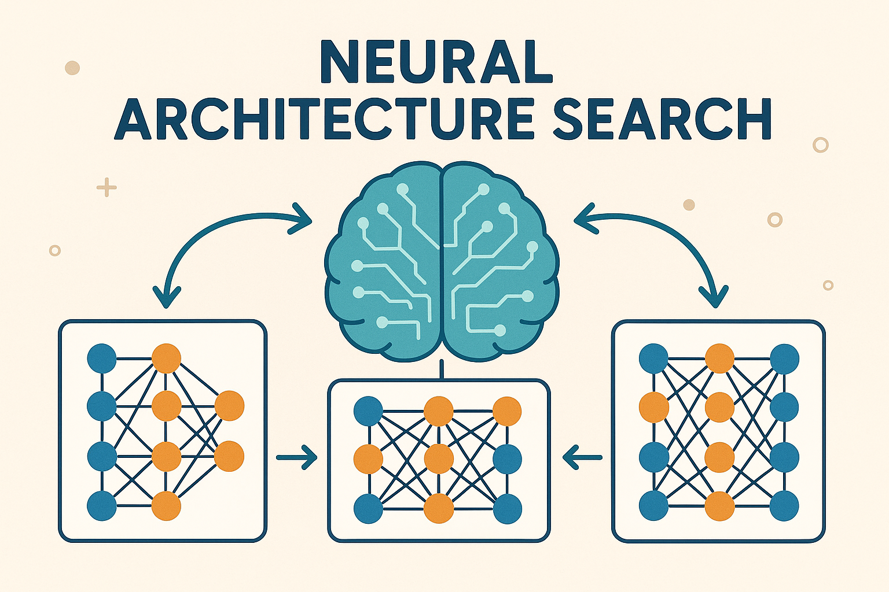

Neural Architecture Search: A Comprehensive Guide

Introduction
Neural Architecture Search (NAS) represents a paradigm shift in deep learning, moving from manual architecture design to automated discovery of optimal neural network structures. This field has emerged as one of the most promising areas in machine learning, addressing the fundamental challenge of designing neural networks that are both effective and efficient for specific tasks.
The traditional approach to neural network design relies heavily on human expertise, intuition, and extensive trial-and-error experimentation. Researchers and practitioners spend considerable time crafting architectures, tuning hyperparameters, and adapting existing designs to new domains. NAS automates this process, using computational methods to explore the vast space of possible architectures and identify designs that achieve superior performance with minimal human intervention.
The Architecture Design Challenge
Neural network architecture design involves making numerous interconnected decisions about layer types, connectivity patterns, activation functions, and structural components. The complexity of these decisions grows exponentially with network depth and the variety of available operations. Consider that even a simple decision tree for a 10-layer network with 5 possible layer types per position yields \(5^{10}\) possible architectures—nearly 10 million configurations.
The manual design process typically follows established patterns and heuristics. Researchers begin with proven architectures like ResNet or VGG, then modify them based on domain knowledge and empirical results.
This approach has limitations: it’s time-consuming, potentially biased toward human preconceptions, and may miss novel architectural innovations that could significantly improve performance.
Core Concepts and Definitions
Search Space
The search space defines the set of all possible architectures that the NAS algorithm can explore. A well-designed search space balances expressiveness with computational tractability. Common search space formulations include:
- Cell-based Search Spaces: These define repeatable computational cells that are stacked to form complete architectures. Each cell contains a directed acyclic graph of operations, with the final architecture determined by the cell structure and stacking pattern.
- Macro Search Spaces: These consider the overall network structure, including the number of layers, layer types, and connectivity patterns across the entire network.
- Hierarchical Search Spaces: These decompose the architecture search into multiple levels, such as searching for optimal cells at one level and optimal cell arrangements at another.
Performance Estimation
Evaluating architecture performance is computationally expensive, as it typically requires training each candidate architecture to convergence. NAS methods employ various strategies to reduce this computational burden:
Training on simplified versions of the target task, such as using fewer epochs, smaller datasets, or reduced model sizes.
Using machine learning models to predict architecture performance based on structural features without full training.
Sharing weights among similar architectural components to reduce training time.
Search Strategy
The search strategy determines how the NAS algorithm navigates the search space to find optimal architectures. Different strategies make different trade-offs between exploration and exploitation:
- Random Search: Samples architectures uniformly from the search space. While simple, it can be surprisingly effective for well-designed search spaces.
- Evolutionary Algorithms: Use principles of natural selection to evolve populations of architectures over generations.
- Reinforcement Learning: Treats architecture search as a sequential decision-making problem, using RL agents to generate architectures.
- Gradient-based Methods: Relax the discrete search space into a continuous one, enabling gradient-based optimization.
Historical Development
Neural Architecture Search emerged from the broader field of evolutionary computation and neural evolution. Early work in the 1990s explored evolving neural network topologies using genetic algorithms, but computational limitations prevented widespread adoption.
The modern NAS era began with the 2017 paper “Neural Architecture Search with Reinforcement Learning” by Zoph and Le. This work demonstrated that reinforcement learning could automatically design architectures that matched or exceeded human-designed networks on image classification tasks.
Key milestones in NAS development include:
| Year | Milestone |
|---|---|
| 2017 | Introduction of reinforcement learning-based NAS |
| 2018 | Development of Efficient Neural Architecture Search (ENAS) with weight sharing |
| 2019 | Introduction of differentiable architecture search (DARTS) |
| 2020 | Hardware-aware NAS and multi-objective optimization |
| 2021 | Zero-shot NAS and training-free performance estimation |
| 2022 | Transformer architecture search and large-scale NAS |
Major NAS Methodologies
Reinforcement Learning-Based NAS
Reinforcement learning approaches model architecture search as a sequential decision-making problem. A controller (typically an RNN) generates architecture descriptions by making a sequence of decisions about layer types, connections, and hyperparameters. The controller is trained using reinforcement learning, with the validation accuracy of generated architectures serving as the reward signal.
The original NAS formulation used the REINFORCE algorithm to train the controller. The process involves:
- The controller samples an architecture from the search space
- The architecture is trained on the target task
- The validation accuracy provides a reward signal
- The controller parameters are updated using policy gradients
This approach achieved remarkable results, discovering architectures that outperformed human-designed networks on ImageNet classification. However, the computational cost was enormous—the original paper required 22,400 GPU-days to find optimal architectures.
Evolutionary Approaches
Evolutionary methods maintain a population of candidate architectures and evolve them over generations using genetic operators like mutation and crossover. These methods are naturally suited to architecture search because they can handle discrete search spaces and don’t require gradient information.
The evolutionary process typically follows these steps:
- Initialize a population of random architectures
- Evaluate each architecture’s fitness (usually validation accuracy)
- Select parents based on fitness scores
- Generate offspring using crossover and mutation
- Replace the least fit individuals with offspring
- Repeat until convergence
Evolutionary approaches offer several advantages: they’re robust to noisy fitness evaluations, can handle multi-objective optimization naturally, and are less likely to get stuck in local optima compared to gradient-based methods.
Differentiable Architecture Search (DARTS)
DARTS revolutionized NAS by making the search process differentiable, enabling gradient-based optimization. The key insight is to relax the discrete architecture search into a continuous optimization problem.
In DARTS, instead of selecting a single operation for each edge in the architecture graph, all possible operations are initially included with learnable weights. The architecture is represented as a weighted combination of all operations, with the weights learned through gradient descent.
The DARTS formulation involves:
- Architecture Parameters: Weights that determine the importance of each operation
- Network Weights: Standard neural network parameters
- Bilevel Optimization: Alternating between optimizing network weights and architecture parameters
After training, the final architecture is obtained by selecting the operation with the highest weight for each edge. This approach reduces search time from thousands of GPU-days to a few GPU-days.
One-Shot Architecture Search
One-shot methods train a single “supernet” that contains all possible architectures in the search space as subnetworks. Once trained, different architectures can be evaluated by sampling subnetworks without additional training.
The supernet approach works by:
- Supernet Training: Training a large network that encompasses all candidate architectures
- Architecture Sampling: Evaluating specific architectures by activating corresponding subnetworks
- Performance Estimation: Using the sampled subnetwork’s performance as a proxy for the full architecture’s performance
This method dramatically reduces computational cost since it requires training only once. However, it introduces challenges related to weight sharing and potential interference between different architectural paths.
Search Space Design
Cell-Based Search Spaces
Cell-based search spaces focus on finding optimal computational cells that can be stacked to form complete architectures. This approach reduces the search space size while maintaining architectural diversity.
A typical cell contains:
- Input Nodes: Receive inputs from previous cells or external sources
- Intermediate Nodes: Apply operations to transform inputs
- Output Nodes: Combine intermediate results to produce cell outputs
The cell structure is defined by:
- Operations: Convolutions, pooling, skip connections, etc.
- Connections: How nodes are connected within the cell
- Combination Functions: How multiple inputs to a node are combined
Popular cell-based search spaces include:
- NASNet Search Space: Used in the original NAS paper
- DARTS Search Space: Simplified version focusing on common operations
- PC-DARTS Search Space: Extends DARTS with partial channel connections
Macro Search Spaces
Macro search spaces consider the overall network structure, including decisions about:
- Network Depth: Total number of layers
- Layer Types: Convolution, pooling, normalization, activation
- Channel Dimensions: Number of filters in each layer
- Skip Connections: Long-range connections between layers
Macro search is more challenging than cell-based search because: - The search space is typically much larger - Architectural decisions are more interdependent - Performance evaluation is more expensive
Hierarchical Search Spaces
Hierarchical approaches decompose architecture search into multiple levels:
- Level 1: Micro-architecture search (within cells)
- Level 2: Macro-architecture search (cell arrangement)
- Level 3: Network-level search (overall structure)
This decomposition allows for:
- More efficient search by reducing complexity at each level
- Better generalization across different tasks
- Modular design that can be adapted to various domains
Performance Estimation Strategies
Proxy Tasks
Proxy tasks reduce evaluation cost by training on simplified versions of the target problem:
- Reduced Epochs: Training for fewer iterations to get approximate performance
- Smaller Datasets: Using subsets of the training data
- Lower Resolution: Reducing image size or sequence length
- Fewer Channels: Using narrower networks during search
The effectiveness of proxy tasks depends on:
- Rank Correlation: How well proxy performance predicts full performance
- Computational Savings: The reduction in training time
- Task Similarity: How closely the proxy resembles the target task
Weight Sharing
Weight sharing reduces training time by reusing parameters across similar architectural components:
- Parameter Inheritance: New architectures inherit weights from previously trained models
- Shared Backbones: Common layers share parameters across different architectures
- Progressive Training: Gradually building up architectures while sharing lower-level weights
Challenges with weight sharing include:
- Interference: Different architectures may require conflicting parameter values
- Bias: Shared weights may favor certain architectural patterns
- Optimization: Balancing individual architecture performance with shared efficiency
Performance Prediction
Machine learning models can predict architecture performance without full training:
- Feature Engineering: Extracting architectural features (depth, width, connectivity)
- Graph Neural Networks: Using GNNs to encode architectural structure
- Surrogate Models: Training regression models on architecture-performance pairs
Key considerations:
- Training Data: Sufficient architecture-performance pairs for training
- Generalization: Ability to predict performance on unseen architectures
- Computational Cost: Prediction should be much faster than full training
Hardware-Aware NAS
Motivation
Modern deployment scenarios require architectures that are not only accurate but also efficient in terms of:
- Latency: Inference time on target hardware
- Energy Consumption: Power usage during operation
- Memory Usage: RAM and storage requirements
- Throughput: Number of samples processed per second
Traditional NAS methods optimize primarily for accuracy, often producing architectures that are impractical for deployment. Hardware-aware NAS addresses this by incorporating efficiency metrics into the search process.
Multi-Objective Optimization
Hardware-aware NAS typically involves multiple, often conflicting objectives:
- Accuracy: Model performance on the target task
- Efficiency: Hardware-specific metrics (latency, energy, memory)
- Size: Model parameter count and storage requirements
Common approaches include:
- Pareto-optimal Search: Finding architectures that represent optimal trade-offs
- Weighted Objectives: Combining multiple metrics into a single score
- Constraint-based Search: Searching within efficiency constraints
Platform-Specific Considerations
Different hardware platforms have unique characteristics that affect architecture performance:
| Platform | Characteristics | Priorities |
|---|---|---|
| Mobile Devices | Limited memory and battery life | Efficiency |
| Edge Devices | Extreme resource constraints | Real-time performance |
| Cloud GPUs | High throughput capabilities | Parallel processing |
| Specialized Hardware | TPUs, FPGAs, custom accelerators | Optimized operations |
Latency Prediction
Accurate latency prediction is crucial for hardware-aware NAS:
- Direct Measurement: Running architectures on target hardware
- Analytical Models: Using theoretical models based on operation counts
- Learned Predictors: Training models to predict latency from architectural features
Challenges include:
- Hardware Variability: Different devices have different performance characteristics
- Optimization Effects: Compiler optimizations can significantly affect performance
- Batch Size Dependencies: Latency often varies with batch size
Applications Across Domains
Computer Vision
NAS has achieved remarkable success in computer vision tasks:
- Image Classification: Discovering architectures that outperform ResNet and other human-designed networks
- Object Detection: Finding efficient architectures for real-time detection systems
- Semantic Segmentation: Optimizing architectures for dense prediction tasks
- Image Generation: Searching for GAN architectures with improved stability and quality
Notable achievements:
- EfficientNet: Achieved state-of-the-art ImageNet accuracy with fewer parameters
- NAS-FPN: Improved object detection performance through architecture search
- Auto-DeepLab: Automated architecture search for semantic segmentation
Natural Language Processing
NAS applications in NLP have focused on:
- Language Modeling: Finding efficient architectures for sequence modeling
- Machine Translation: Optimizing encoder-decoder architectures
- Text Classification: Discovering architectures for various NLP tasks
- Question Answering: Searching for architectures that can effectively reason over text
Key developments:
- Evolved Transformer: Used evolutionary search to improve Transformer architectures
- NASH: Applied NAS to find efficient architectures for language understanding
- AutoML for NLP: Automated architecture search for various NLP tasks
Speech Recognition
Speech recognition presents unique challenges for NAS:
- Temporal Modeling: Architectures must effectively capture temporal dependencies
- Computational Constraints: Real-time processing requirements
- Robustness: Handling various acoustic conditions and speaking styles
Applications include:
- Automatic Speech Recognition: Finding efficient architectures for speech-to-text
- Speaker Recognition: Optimizing architectures for speaker identification
- Speech Enhancement: Searching for architectures that can improve audio quality
Recommendation Systems
NAS has been applied to recommendation systems for:
- Feature Interaction: Finding optimal ways to combine user and item features
- Embedding Architectures: Optimizing embedding dimensions and structures
- Multi-Task Learning: Balancing multiple recommendation objectives
Challenges specific to recommendation systems:
- Large-Scale Data: Handling massive user-item interaction datasets
- Cold Start: Dealing with new users and items
- Interpretability: Maintaining explainable recommendation decisions
Challenges and Limitations
Computational Cost
Despite significant progress, NAS remains computationally expensive:
- Search Time: Finding optimal architectures can take days or weeks
- Hardware Requirements: Requiring substantial computational resources
- Energy Consumption: High carbon footprint of extensive architecture search
Mitigation strategies include:
- Efficient Search Methods: Developing faster search algorithms
- Better Performance Estimation: Reducing evaluation cost
- Transfer Learning: Reusing search results across similar tasks
Search Space Bias
The design of search spaces introduces inherent biases:
- Human Bias: Search spaces reflect human assumptions about good architectures
- Limited Diversity: Constrained search spaces may miss innovative designs
- Task Specificity: Search spaces designed for one task may not generalize
Reproducibility
NAS research faces significant reproducibility challenges:
- Computational Requirements: Not all researchers have access to required resources
- Implementation Details: Many important details are often omitted from papers
- Evaluation Protocols: Inconsistent evaluation methods across studies
Generalization
Architectures found by NAS may not generalize well:
- Task Transfer: Architectures optimized for one task may not work well on others
- Dataset Dependence: Performance may not transfer to different datasets
- Scale Sensitivity: Architectures may not scale to different problem sizes
Recent Advances and Future Directions
Zero-Shot NAS
Zero-shot NAS aims to evaluate architectures without training:
- Architecture Encoders: Using graph neural networks to encode architectural structure
- Performance Predictors: Training models to predict performance from structure alone
- Gradient-Based Metrics: Using gradient information to assess architecture quality
This approach promises to eliminate the training bottleneck entirely, making NAS accessible to researchers with limited computational resources.
Automated Machine Learning (AutoML)
NAS is increasingly integrated into broader AutoML systems:
- End-to-End Automation: Combining architecture search with hyperparameter optimization
- Data Preprocessing: Jointly optimizing data augmentation and architecture
- Model Selection: Automatically choosing between different model families
Federated NAS
Federated learning scenarios present new challenges for NAS:
- Heterogeneous Data: Different clients may have different data distributions
- Communication Constraints: Limited bandwidth for sharing architectural information
- Privacy Concerns: Protecting client data during architecture search
Transformer Architecture Search
The success of Transformers has sparked interest in automated Transformer design:
- Attention Mechanisms: Searching for optimal attention patterns
- Positional Encodings: Finding better ways to encode positional information
- Architecture Scaling: Optimizing Transformer architectures for different scales
Multi-Modal NAS
As AI systems become more multi-modal, NAS must handle:
- Cross-Modal Interactions: Optimizing architectures for multiple input modalities
- Fusion Strategies: Finding optimal ways to combine different types of information
- Unified Architectures: Searching for architectures that can handle multiple tasks
Best Practices and Recommendations
Search Space Design
- Start Simple: Begin with well-understood search spaces before exploring novel designs
- Validate Assumptions: Ensure that the search space can express effective architectures
- Consider Constraints: Incorporate deployment constraints into the search space design
- Enable Diversity: Allow for architectural diversity to avoid local optima
Performance Estimation
- Validate Proxies: Ensure that proxy tasks correlate well with full performance
- Use Multiple Metrics: Consider multiple performance indicators beyond accuracy
- Account for Variance: Properly handle performance variability across runs
- Benchmark Carefully: Compare against appropriate baselines
Implementation
- Modular Code: Design systems that can easily incorporate new search methods
- Efficient Implementation: Optimize code for the specific computational constraints
- Careful Logging: Track all experiments and intermediate results
- Reproducible Setup: Document all implementation details and hyperparameters
Evaluation
- Multiple Runs: Average results over multiple independent runs
- Statistical Significance: Use appropriate statistical tests for comparing methods
- Comprehensive Baselines: Compare against relevant human-designed architectures
- Transfer Evaluation: Test architectures on multiple tasks and datasets
Conclusion
Neural Architecture Search represents a fundamental shift in how we approach neural network design, moving from manual crafting to automated discovery. The field has made remarkable progress in reducing computational costs, improving search efficiency, and expanding to new domains and applications.
Key achievements include the development of efficient search methods like DARTS, the integration of hardware constraints into the search process, and the successful application of NAS to diverse domains beyond computer vision. These advances have democratized access to high-quality architectures and enabled the discovery of designs that outperform human-crafted networks.
However, significant challenges remain. Computational costs, while reduced, are still substantial. Search space design continues to introduce biases that may limit architectural diversity. Reproducibility issues persist due to the computational requirements and implementation complexity. Generalization across tasks and datasets remains an active area of research.
The future of NAS looks promising, with emerging directions including zero-shot evaluation, federated learning integration, and multi-modal architecture search. As the field matures, we can expect to see more efficient methods, better theoretical understanding, and broader adoption in practical applications.
For practitioners looking to apply NAS, the key is to start with established methods and well-designed search spaces, carefully validate performance estimation strategies, and consider the specific constraints and requirements of their deployment scenarios.
The ultimate goal of NAS is not just to automate architecture design, but to discover fundamental principles of neural network structure that can inform future research and development. By understanding what makes architectures effective across different tasks and constraints, we can build more intelligent, efficient, and capable AI systems.